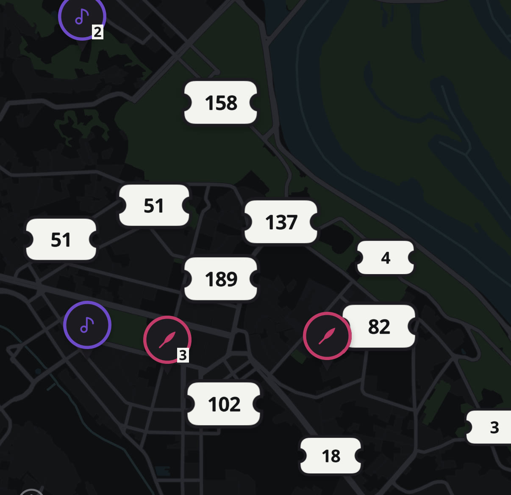
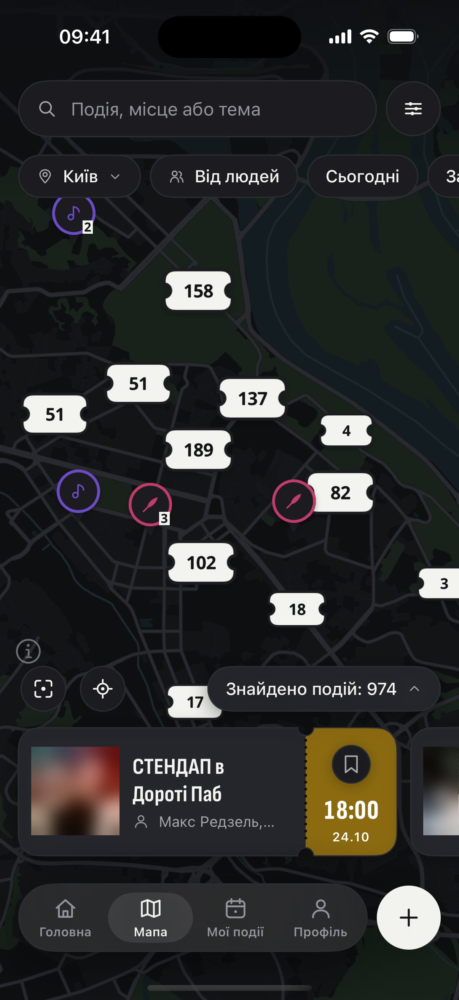
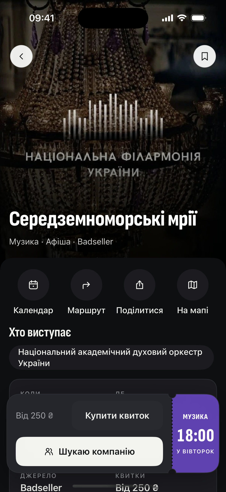

де сьогодніщось відбувається? 👀
стендап
концерти
театр
вечірки
дітям


Є куди.
Буде з ким.
Поряд
Є куди. Буде з ким.
куди підеш цього тижня? 👇
безкоштовно
Apple, логотип Apple і App Store є торговельними марками Apple Inc.
Google Play і логотип Google Play є торговельними марками Google LLC.